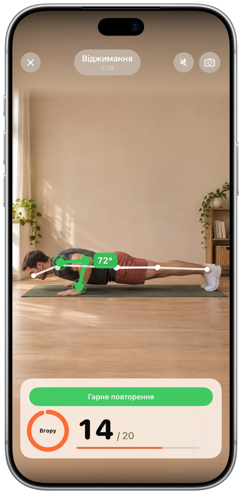
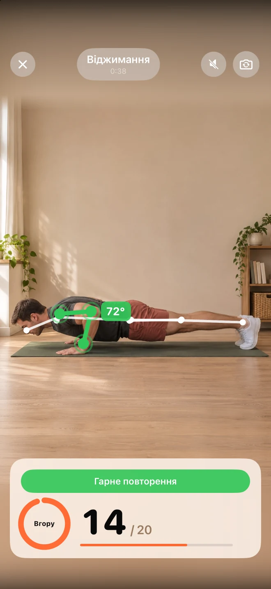
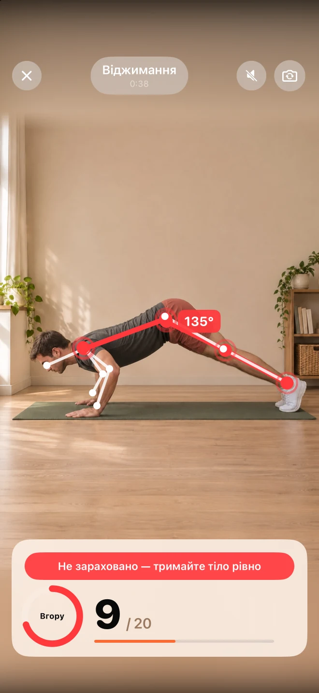
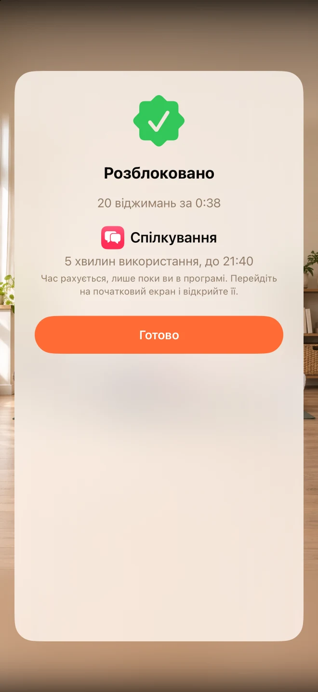

Оберіть, що вас відволікатиме.
Оберіть додатки, від яких ви хотіли б трохи віддалитися. Unlocky використовує функцію «Час використання екрана» від Apple, щоб блокувати їх.
Зробіть невелику розминку перед використанням.
Менше автоматизації. Більше можливостей для вас.
Заблокуйте застосунки, які забирають ваш день. Короткий підхід віджимань, присідань або стрибків із розведенням рук і ніг дасть кілька хвилин доступу.
Безкоштовно · без підписки · без облікового запису.


Скріншот додатку
Можливості
Оберіть додатки, від яких ви хотіли б трохи віддалитися. Unlocky використовує функцію «Час використання екрана» від Apple, щоб блокувати їх.
Оберіть віджимання, присідання або стрибки. Камера вашого iPhone підраховує кількість повторень під час руху, надаючи миттєвий зворотний зв’язок.
Встановіть власні винагороди та щоденний ліміт. Зароблені хвилини враховуються під час використання додатка, після чого блокування повертається.
Як виглядає
Справжні скріншоти. Краще відчуття того, що всередині.



FAQ
Відповіді, перш ніж почати
Unlocky використовує функцію «Час використання екрана» від Apple. Під час налаштування ви обираєте програми та надаєте дозвіл на їх використання. Ви можете скасувати надання доступу в налаштуваннях iPhone.
Unlocky не записує вас. Кадри камери аналізуються в реальному часі на вашому iPhone. Відео та фото не зберігаються й нікуди не завантажуються.
Так. Обирайте віджимання, присідання або стрибки та встановлюйте, скільки хвилин потрібно, щоб отримати нагороду за один підхід. Щоденний ліміт допоможе вам дотримуватися встановлених меж.
Так. Unlocky не має платної підписки чи обмежень. Для роботи потрібен iPhone з iOS 17 або новішої версії.
Безкоштовно · без підписки · без облікового запису.

Рухайтеся у власному темпі та зупиняйтеся, якщо відчуваєте дискомфорт. Якщо у вас є проблеми зі здоров’ям, проконсультуйтеся з лікарем, перш ніж починати нову програму вправ.